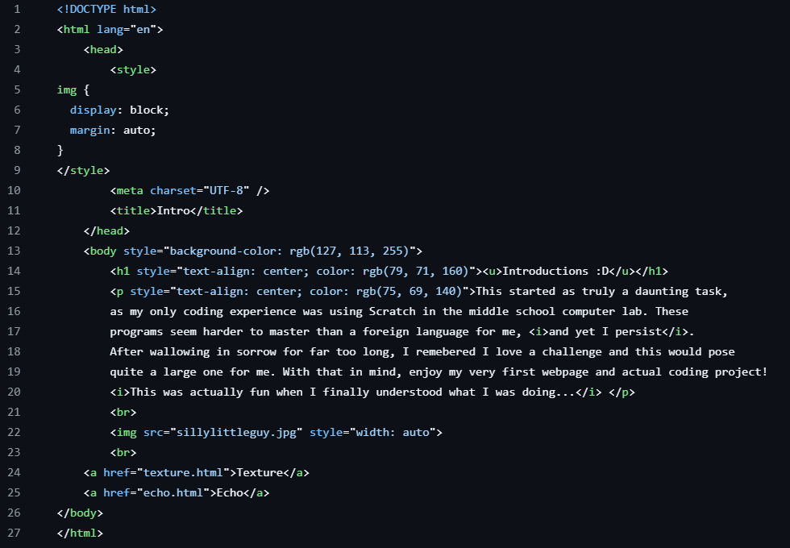

Project Decsription
The Glitch-N-Grit project tested my ability to create HTML code,
creating a website serving as a portfolio. I
used Phoenix code and Github to create code and publish my website.
I also referenced W3Schools to properly
check my code.
Ultimately, this project proved to be my greatest challenge so far.
I've never coded before this and felt
overwhelmed me greatly. Luckily, teamwork makes the dream work
so I worked with a partner to share what we've
learned and give each other feedback and advice. Without help,
I would've most definitely failed the project.
Glitch-N-Grit
